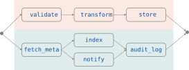

Composition
Code structure is execution structure
Nesting parallel inside seq inside parallel works
exactly as it reads. The execution graph is derived directly from the code structure.
Stpr lets you write concurrent pipelines with simple constructs - no callbacks, no thread juggling, no asyncio boilerplate.
import stpr # Two code blocks run concurrently with parallel:with seq: # block A validate(data) transform(data) store(data)with seq: # block B fetch_meta() with parallel: # nested parallelism index() notify() audit_log()

A concise API that gives you composable concurrency primitives.
Composition
Nesting parallel inside seq inside parallel works
exactly as it reads. The execution graph is derived directly from the code structure.
Easy Migration
Add @stpr.fn to any existing function to make it asynchronous and enable
all Stpr features. No need to change the function body. Stpr will use the existing synchronous
functions and switch to using await automatically when they are made async.
Performance
Thousands of concurrent network calls, file reads, and DB queries on a single thread using asyncio event loops without the complexity of asyncio.
Safety
Concurrent primitives use structure exception handling semantics in which errors propagate cleanly through context manager scopes.
Requires Python 3.8 or later. Minimal external dependencies.
Full install guide →